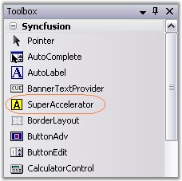
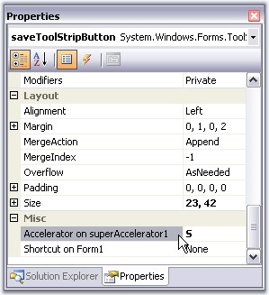
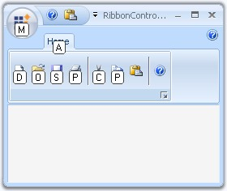

SuperAccelerator is a component that is used to accelerate the click event of items by using a Single key stroke without mouse hovering on it.
1. Drag-and-drop the SuperAccelerator on your form.

Figure 1454: SuperAccelerator in Toolbox
2. When the SuperAccelerator component is added to a form, an extended property will be added to the properties of every item in the toolstrip or tabitem in the RibbonControlAdv.

Figure 1455: SuperAccelerator Extended Property on ToolStripButton Item
3. In the appropriate item, use the Accelerator on SuperAccelerator property to set the string value.

Figure 1456: SuperAccelerator Illustrated
4. To accelerate the item's click event at run time, Press the ALT key. All the specified accelerator strings will be displayed below the items.
5. Press the string in the keyboard and the corresponding item's click event will be triggered. (Eg. If the accelerator string of Cut is X key, Press ALT key. Once all the accelerator strings are displayed, press X key the Cut item event will be triggered.)
 Note: We can make the Accelerator feature to
be active or inactive using SuperAccelerator.Active property.
Note: We can make the Accelerator feature to
be active or inactive using SuperAccelerator.Active property.
See Also
How to get or set an accelerator key programmatically?
 Super Accelerator
Appearance
Super Accelerator
Appearance